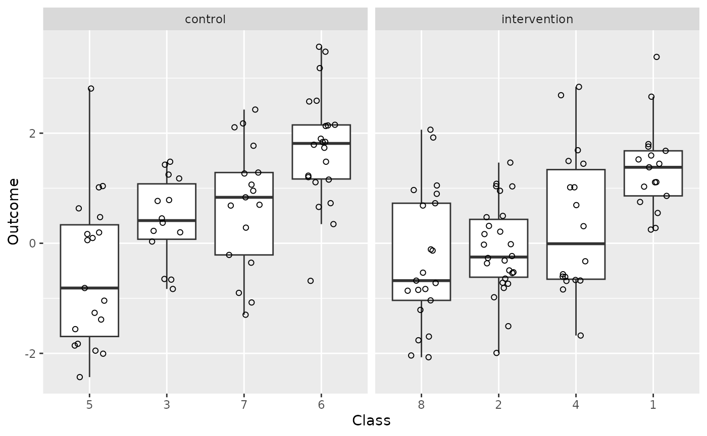
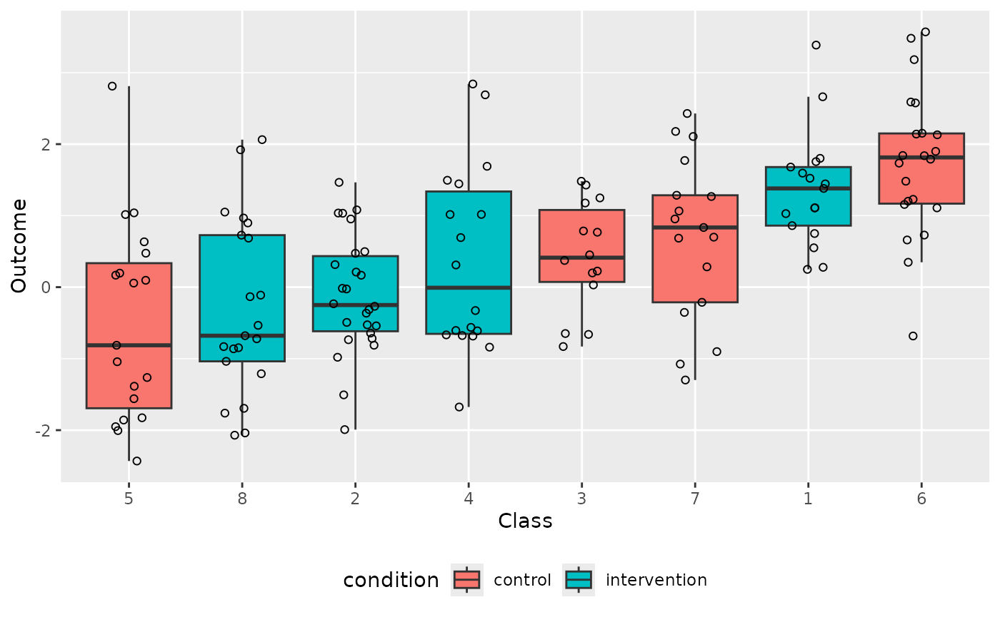
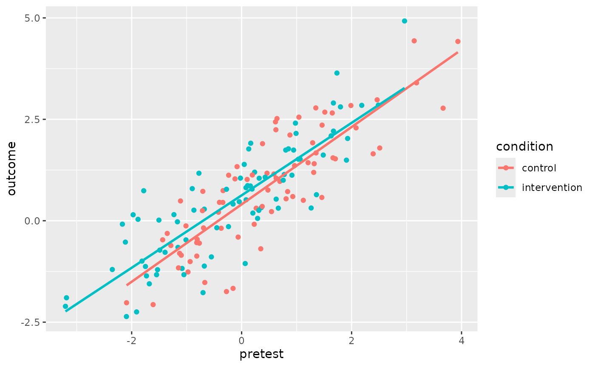
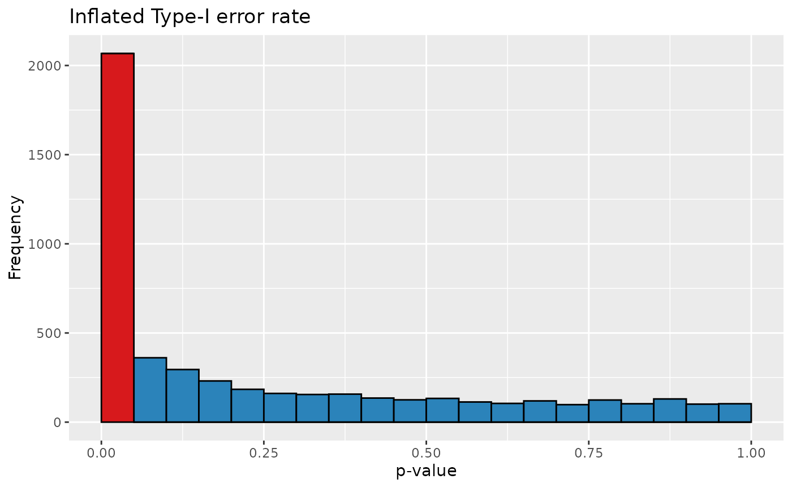
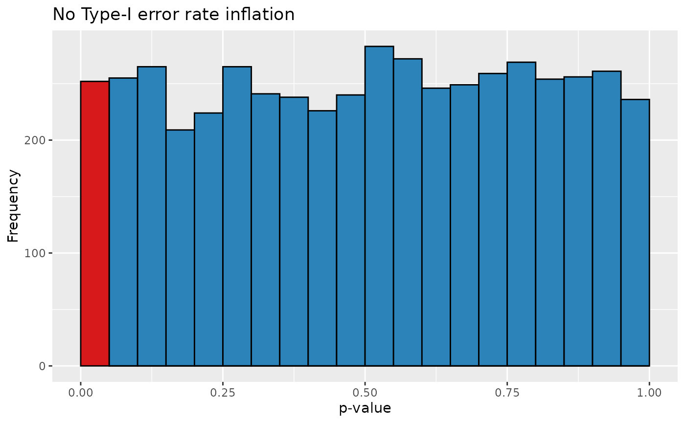

Simulating and analysing cluster-randomised designs
Source:vignettes/cluster-randomisation.Rmd
cluster-randomisation.RmdThe data from experiments in which entire clusters of participants
(e.g., classes) are assigned to the experimental conditions can’t be
analysed in the same way as data from experiments in which the
participants are assigned to the conditions individually. The function
clustered_data() generates data for a cluster-randomised
experiment and can be used to demonstrate the increased Type-I error
rate if such data are analysed using t-tests on the individual outcomes.
See Vanhove
(2015) for an introduction geared towards applied linguists.
Simulating cluster-randomised data
First load the package.
The n_per_class parameter specifies the number of pupils
in each simulated class. Half of the classes are assigned to the
intervention condition and half to the control condition.
d <- clustered_data(
n_per_class <- c(17, 26, 14, 18, 19, 22, 17, 21),
ICC = 0.25,
effect = 0.3
)
d
#> class condition outcome pretest
#> 1 1 intervention 1.67942590 NA
#> 2 1 intervention 1.10718657 NA
#> 3 1 intervention 1.52314405 NA
#> 4 1 intervention 0.27784191 NA
#> 5 1 intervention 1.38040997 NA
#> 6 1 intervention 0.86053364 NA
#> 7 1 intervention 2.66258862 NA
#> 8 1 intervention 0.24867657 NA
#> 9 1 intervention 1.02848899 NA
#> 10 1 intervention 1.44462190 NA
#> 11 1 intervention 1.75581606 NA
#> 12 1 intervention 3.38532738 NA
#> 13 1 intervention 0.74993293 NA
#> 14 1 intervention 0.55033618 NA
#> 15 1 intervention 1.11060854 NA
#> 16 1 intervention 1.80124294 NA
#> 17 1 intervention 1.59471957 NA
#> 18 2 intervention -0.31370590 NA
#> 19 2 intervention -0.54102394 NA
#> 20 2 intervention -0.36389342 NA
#> 21 2 intervention -0.81203426 NA
#> 22 2 intervention 0.16696623 NA
#> 23 2 intervention -0.52673237 NA
#> 24 2 intervention -0.26757197 NA
#> 25 2 intervention -0.02507939 NA
#> 26 2 intervention -1.99212227 NA
#> 27 2 intervention 0.21102987 NA
#> 28 2 intervention -0.23259112 NA
#> 29 2 intervention 0.31527921 NA
#> 30 2 intervention -0.49295657 NA
#> 31 2 intervention 1.46539050 NA
#> 32 2 intervention -0.73517933 NA
#> 33 2 intervention -1.50623285 NA
#> 34 2 intervention -0.98029749 NA
#> 35 2 intervention 1.08021536 NA
#> 36 2 intervention -0.64180036 NA
#> 37 2 intervention 1.03359740 NA
#> 38 2 intervention -0.01653603 NA
#> 39 2 intervention 0.95320654 NA
#> 40 2 intervention -0.71722147 NA
#> 41 2 intervention 0.49707872 NA
#> 42 2 intervention 0.47372555 NA
#> 43 2 intervention 1.03662339 NA
#> 44 3 control 1.17709706 NA
#> 45 3 control 1.24786825 NA
#> 46 3 control 0.03107657 NA
#> 47 3 control 0.78572161 NA
#> 48 3 control 0.37300007 NA
#> 49 3 control 0.19906938 NA
#> 50 3 control 1.42766307 NA
#> 51 3 control -0.64849887 NA
#> 52 3 control 0.76822601 NA
#> 53 3 control -0.83012772 NA
#> 54 3 control 0.45182698 NA
#> 55 3 control 1.48113977 NA
#> 56 3 control 0.22498900 NA
#> 57 3 control -0.66060888 NA
#> 58 4 intervention 1.44496081 NA
#> 59 4 intervention 2.84120934 NA
#> 60 4 intervention -0.83900077 NA
#> 61 4 intervention -1.67596104 NA
#> 62 4 intervention -0.61095778 NA
#> 63 4 intervention 1.01617936 NA
#> 64 4 intervention -0.66709120 NA
#> 65 4 intervention -0.67697678 NA
#> 66 4 intervention -0.32709435 NA
#> 67 4 intervention -0.56246388 NA
#> 68 4 intervention 1.49460676 NA
#> 69 4 intervention 1.01697481 NA
#> 70 4 intervention 0.31049028 NA
#> 71 4 intervention 2.68953313 NA
#> 72 4 intervention -0.68428725 NA
#> 73 4 intervention 0.69317801 NA
#> 74 4 intervention -0.60618643 NA
#> 75 4 intervention 1.69009766 NA
#> 76 5 control 0.09607811 NA
#> 77 5 control -0.81307323 NA
#> 78 5 control 0.05716141 NA
#> 79 5 control -1.95107268 NA
#> 80 5 control -2.00597098 NA
#> 81 5 control -1.82650344 NA
#> 82 5 control -1.26357833 NA
#> 83 5 control -1.55998681 NA
#> 84 5 control -1.04283058 NA
#> 85 5 control 0.63419822 NA
#> 86 5 control -1.85813138 NA
#> 87 5 control 0.16755737 NA
#> 88 5 control 2.81119736 NA
#> 89 5 control 1.03907811 NA
#> 90 5 control -2.43120123 NA
#> 91 5 control 0.47511085 NA
#> 92 5 control -1.38565499 NA
#> 93 5 control 1.01586053 NA
#> 94 5 control 0.19567858 NA
#> 95 6 control 2.58913773 NA
#> 96 6 control 3.56974989 NA
#> 97 6 control 2.14064583 NA
#> 98 6 control 2.15244935 NA
#> 99 6 control 0.34803842 NA
#> 100 6 control 1.83857145 NA
#> 101 6 control 1.84132591 NA
#> 102 6 control 3.48005688 NA
#> 103 6 control 2.57596109 NA
#> 104 6 control 0.65999240 NA
#> 105 6 control 1.15659248 NA
#> 106 6 control 1.73443521 NA
#> 107 6 control 1.20140181 NA
#> 108 6 control 1.48138265 NA
#> 109 6 control -0.68265182 NA
#> 110 6 control 1.10855608 NA
#> 111 6 control 1.89910027 NA
#> 112 6 control 2.13067232 NA
#> 113 6 control 0.72845353 NA
#> 114 6 control 1.22815108 NA
#> 115 6 control 1.78932714 NA
#> 116 6 control 3.18176125 NA
#> 117 7 control -1.07549220 NA
#> 118 7 control -0.21187136 NA
#> 119 7 control 2.10686346 NA
#> 120 7 control 1.26746936 NA
#> 121 7 control 0.68500666 NA
#> 122 7 control 0.28379129 NA
#> 123 7 control 1.06532289 NA
#> 124 7 control 2.17735700 NA
#> 125 7 control 2.42854984 NA
#> 126 7 control 0.95366314 NA
#> 127 7 control -0.90122933 NA
#> 128 7 control 1.28493883 NA
#> 129 7 control 0.69932422 NA
#> 130 7 control -1.29850966 NA
#> 131 7 control -0.35324936 NA
#> 132 7 control 1.77144299 NA
#> 133 7 control 0.83468166 NA
#> 134 8 intervention -1.69455976 NA
#> 135 8 intervention -1.21063748 NA
#> 136 8 intervention -0.13284609 NA
#> 137 8 intervention -1.03742831 NA
#> 138 8 intervention -0.67877652 NA
#> 139 8 intervention -0.72206877 NA
#> 140 8 intervention 1.05003772 NA
#> 141 8 intervention -0.53399279 NA
#> 142 8 intervention -2.07053028 NA
#> 143 8 intervention -0.11144444 NA
#> 144 8 intervention 0.68561495 NA
#> 145 8 intervention 2.06287013 NA
#> 146 8 intervention -0.84690331 NA
#> 147 8 intervention -1.76168512 NA
#> 148 8 intervention -0.86197354 NA
#> 149 8 intervention 0.89815131 NA
#> 150 8 intervention 1.92073100 NA
#> 151 8 intervention -0.83127243 NA
#> 152 8 intervention 0.96700071 NA
#> 153 8 intervention 0.72734008 NA
#> 154 8 intervention -2.03863201 NA
xtabs(~ class + condition, d)
#> condition
#> class control intervention
#> 1 0 17
#> 2 0 26
#> 3 14 0
#> 4 0 18
#> 5 19 0
#> 6 22 0
#> 7 17 0
#> 8 0 21I like to plot the outcomes of cluster-randomised experiments with a continuous outcome like so:
library(ggplot2)
ggplot(data = d,
aes(x = reorder(class, outcome, FUN = median),
y = outcome)) +
geom_boxplot(outlier.shape = NA) +
geom_point(shape = 1,
position = position_jitter(width = 0.2)) +
facet_wrap(~ condition, scales = "free_x") +
xlab("Class") +
ylab("Outcome")
Or like so:
ggplot(data = d,
aes(x = reorder(class, outcome, FUN = median),
y = outcome)) +
geom_boxplot(
outlier.shape = NA,
mapping = aes(fill = condition)
) +
geom_point(shape = 1,
position = position_jitter(width = 0.2)) +
xlab("Class") +
ylab("Outcome") +
theme(legend.position = "bottom")
If you want to generate data for a cluster-randomised design that
includes a pretest, you can specify the desired population-level
correlation between the pretest scores and the non-intervention posttest
scores via the rho_prepost parameter:
d <- clustered_data(
n_per_class <- c(17, 26, 14, 18, 19, 22, 17, 21),
ICC = 0.25,
effect = 0.3,
rho_prepost = 0.8
)
#> 'rho_prepost' was set, so the 'reliability_pre' and 'reliability_post' were ignored, and both were set to the 'rho_prepost' value.
d
#> class condition outcome pretest
#> 1 1 intervention 0.73935377 -1.78115069
#> 2 1 intervention -1.17606249 -1.08330734
#> 3 1 intervention 2.02767998 1.92761127
#> 4 1 intervention 1.77244577 0.85066657
#> 5 1 intervention 3.64029098 1.73339725
#> 6 1 intervention 0.86533978 0.10825373
#> 7 1 intervention 4.92391409 2.96341681
#> 8 1 intervention 2.15271536 0.99024020
#> 9 1 intervention 1.49328980 1.90654309
#> 10 1 intervention 1.61909250 1.48479398
#> 11 1 intervention 1.74191036 0.94514694
#> 12 1 intervention 0.28526386 -0.67930426
#> 13 1 intervention 0.32340648 0.35818003
#> 14 1 intervention 2.84971605 2.48662903
#> 15 1 intervention 1.74181224 0.80203879
#> 16 1 intervention 1.19700068 0.23637566
#> 17 1 intervention 2.20950095 1.67047482
#> 18 2 control 2.28903523 2.08171408
#> 19 2 control 2.35679422 1.46309853
#> 20 2 control 1.15082404 0.58685052
#> 21 2 control 2.98081204 2.46491527
#> 22 2 control 0.45125737 -0.34232110
#> 23 2 control 1.52655902 1.70447407
#> 24 2 control -2.02126245 -2.09345472
#> 25 2 control 0.30946509 0.26480600
#> 26 2 control -0.55319861 -0.76922623
#> 27 2 control 0.72429532 -0.70597110
#> 28 2 control -0.85041359 -1.09775294
#> 29 2 control 4.43399512 3.13873901
#> 30 2 control -0.47023834 -1.43636113
#> 31 2 control 0.97040333 0.69536319
#> 32 2 control 0.54100834 0.80826884
#> 33 2 control -1.00705832 -0.93647218
#> 34 2 control 1.92133232 1.29130321
#> 35 2 control 0.71857230 0.83659159
#> 36 2 control 1.40557308 1.31969631
#> 37 2 control 0.75598946 0.47844092
#> 38 2 control -1.26299386 -0.97532584
#> 39 2 control 1.12186686 -0.23617801
#> 40 2 control 0.20940838 -0.42180780
#> 41 2 control 1.33355514 -0.08345958
#> 42 2 control 1.01791116 0.10060472
#> 43 2 control 0.59623533 0.92972267
#> 44 3 control -0.17727015 -0.69319753
#> 45 3 control 2.83971036 1.98757816
#> 46 3 control 1.43074470 1.20841729
#> 47 3 control 0.22500081 0.54339111
#> 48 3 control 1.54994970 1.66124689
#> 49 3 control -0.61079161 -1.28759076
#> 50 3 control 1.35845079 0.96295584
#> 51 3 control -0.40269242 -0.06351061
#> 52 3 control 1.64950372 2.39212185
#> 53 3 control -0.12700047 -1.01282031
#> 54 3 control 0.57380771 1.45879408
#> 55 3 control 0.45335899 -0.40368941
#> 56 3 control -0.18504864 -0.37217173
#> 57 3 control 2.11273552 0.87859725
#> 58 4 control 2.24228433 0.62302772
#> 59 4 control -2.06703139 -1.60994652
#> 60 4 control -0.87150035 -0.81604151
#> 61 4 control 2.51847495 0.64252755
#> 62 4 control 0.35196810 0.37415668
#> 63 4 control 1.89930595 0.37988269
#> 64 4 control -1.52219235 -0.66982141
#> 65 4 control 1.19105714 1.31079382
#> 66 4 control 1.03187129 -0.12087926
#> 67 4 control -0.53948971 -0.81680220
#> 68 4 control -0.08733416 0.22883494
#> 69 4 control 0.74277280 -0.33727980
#> 70 4 control -1.66756012 -0.15589172
#> 71 4 control -1.16124715 -1.14895096
#> 72 4 control -0.80337403 -1.12832353
#> 73 4 control 0.48783655 -1.11215742
#> 74 4 control 1.12790146 0.19449912
#> 75 4 control -1.74596121 -0.27599533
#> 76 5 intervention 0.14743135 -1.97375449
#> 77 5 intervention -0.99540241 -1.81245798
#> 78 5 intervention -1.12769960 -1.74960022
#> 79 5 intervention 1.04748174 0.31932673
#> 80 5 intervention 0.77515288 -0.27608728
#> 81 5 intervention -1.20211635 -2.35227050
#> 82 5 intervention 0.15032903 -1.23137468
#> 83 5 intervention -1.35970786 -1.73081905
#> 84 5 intervention -0.52673634 -2.11467837
#> 85 5 intervention -2.10969615 -3.20473842
#> 86 5 intervention 2.09238015 1.62813416
#> 87 5 intervention -1.20710602 -1.52962159
#> 88 5 intervention 0.18887936 0.20440398
#> 89 5 intervention -0.47222939 -1.01252195
#> 90 5 intervention -1.77223553 -0.70222138
#> 91 5 intervention -1.89876708 -3.18592636
#> 92 5 intervention -0.65716847 -1.15826121
#> 93 5 intervention -1.11759421 -0.67894631
#> 94 5 intervention -0.08437734 -2.16912828
#> 95 6 intervention 2.80665329 1.79764723
#> 96 6 intervention 2.84432374 2.18466325
#> 97 6 intervention 0.64210271 1.36101201
#> 98 6 intervention 1.51742985 1.03272970
#> 99 6 intervention 0.78056828 0.18940677
#> 100 6 intervention 0.99896091 0.75648734
#> 101 6 intervention -0.77797521 -1.39278061
#> 102 6 intervention 0.31370927 1.26435478
#> 103 6 intervention 0.46909557 -0.04362219
#> 104 6 intervention 0.85682051 0.15923693
#> 105 6 intervention 0.53260175 0.62803388
#> 106 6 intervention -1.33064896 -1.54744429
#> 107 6 intervention 1.05083184 -0.02156776
#> 108 6 intervention 1.12256111 0.91516721
#> 109 6 intervention -0.17283712 -0.45164048
#> 110 6 intervention 0.51624551 0.08181274
#> 111 6 intervention 0.01541753 -1.50470861
#> 112 6 intervention -1.32915272 -1.04966890
#> 113 6 intervention 0.30958107 0.66740151
#> 114 6 intervention 2.90211702 1.66924665
#> 115 6 intervention -0.89118983 -0.55019267
#> 116 6 intervention 0.03488696 -1.88477862
#> 117 7 control 2.67696450 1.51290222
#> 118 7 control 1.67068918 1.35336262
#> 119 7 control 2.77452590 3.66454887
#> 120 7 control 1.17230987 0.46173146
#> 121 7 control -0.69131474 0.34779021
#> 122 7 control 2.65614223 1.64829978
#> 123 7 control 2.55313690 1.04192731
#> 124 7 control 2.43720891 0.61553267
#> 125 7 control 1.04885725 0.62705985
#> 126 7 control 2.78096592 1.34893618
#> 127 7 control 3.39886405 3.18100280
#> 128 7 control 4.41918788 3.93322595
#> 129 7 control -0.45857404 -0.80838171
#> 130 7 control 0.50360676 1.12186833
#> 131 7 control 0.24842498 -0.71321922
#> 132 7 control 1.79347223 2.51160394
#> 133 7 control -0.31298333 -1.35339386
#> 134 8 intervention 1.07308520 0.42800792
#> 135 8 intervention 0.41082969 -0.15629086
#> 136 8 intervention 0.81476356 0.07922407
#> 137 8 intervention -0.72467470 -1.48848940
#> 138 8 intervention -1.55454771 -1.67913529
#> 139 8 intervention -1.05504086 0.06505446
#> 140 8 intervention -0.14521355 -0.23917695
#> 141 8 intervention 0.05779565 0.28985211
#> 142 8 intervention 1.14030784 0.77552384
#> 143 8 intervention -0.02593171 -1.16806745
#> 144 8 intervention 2.40562528 0.97887232
#> 145 8 intervention -2.24744085 -1.91069847
#> 146 8 intervention 0.25523506 0.31276702
#> 147 8 intervention 1.76922569 0.12925028
#> 148 8 intervention 0.79122240 -0.89793025
#> 149 8 intervention 1.17077205 -0.77665206
#> 150 8 intervention 1.91059590 0.16545403
#> 151 8 intervention -2.36166942 -2.09552550
#> 152 8 intervention 1.51717867 1.06397052
#> 153 8 intervention 0.26047935 -0.86817259
#> 154 8 intervention 1.38846141 0.04737750
ggplot(
d,
aes(x = pretest, y = outcome,
colour = condition)
) +
geom_point() +
geom_smooth(method = "lm", se = FALSE)
#> `geom_smooth()` using formula = 'y ~ x'
See Vanhove (2020) for more information on leveraging pretest scores (and covariates in general) when designing and analysing data from cluster-randomised designs.
Evaluating the Type-I error rate of naive analysis
To drive the point home that the data from clustered-randomised designs can’t ignore the clustered nature of the data, we can run a simulation that generates a couple of thousand such data sets and analyses them using a t-test on the pupils:
class_n <- c(17, 26, 14, 18, 19, 22, 17, 21)
ps <- replicate(
5000,
{
d <- clustered_data(n_per_class = class_n, ICC = 0.25, effect = 0)
t.test(outcome ~ condition, data = d, var.equal = TRUE)$p.value
}
)The Type-I error rate for these settings is over 40% as opposed to the nominal 5% (when using ):
data.frame(p = ps) |>
ggplot(aes(x = ps)) +
geom_histogram(breaks = seq(0, 1, 0.05),
colour = "black",
mapping = aes(fill = ps < 0.05)) +
scale_fill_manual(values = c("#2b83ba", "#d7191c")) +
xlab("p-value") +
ylab("Frequency") +
ggtitle("Inflated Type-I error rate") +
theme(legend.position = "none")
A correct analysis
One possible way to analyse cluster-randomised data correctly is to average the outcomes per cluster and then just analyse these cluster averages.
d <- clustered_data(
n_per_class <- c(17, 26, 14, 18, 19, 22, 17, 21),
ICC = 0.25,
effect = 0.3
)
d_per_class <- aggregate(d$outcome,
by = list(condition = d$condition, class = d$class),
mean)
d_per_class
#> condition class x
#> 1 intervention 1 0.07700714
#> 2 intervention 2 1.28364777
#> 3 control 3 0.79503307
#> 4 intervention 4 1.10408133
#> 5 control 5 0.35637627
#> 6 control 6 1.16764482
#> 7 control 7 1.73740742
#> 8 intervention 8 0.52379410
t.test(x ~ condition, d_per_class, var.equal = TRUE)
#>
#> Two Sample t-test
#>
#> data: x by condition
#> t = 0.66374, df = 6, p-value = 0.5315
#> alternative hypothesis: true difference in means between group control and group intervention is not equal to 0
#> 95 percent confidence interval:
#> -0.7172593 1.2512249
#> sample estimates:
#> mean in group control mean in group intervention
#> 1.0141154 0.7471326We can verify that this analysis is valid using a simulation:
ps <- replicate(
5000,
{
d <- clustered_data(n_per_class = class_n, ICC = 0.25, effect = 0)
d_per_class <- aggregate(d$outcome,
by = list(condition = d$condition, class = d$class), mean)
t.test(x ~ condition, data = d_per_class, var.equal = TRUE)$p.value
}
)
data.frame(p = ps) |>
ggplot(aes(x = ps)) +
geom_histogram(breaks = seq(0, 1, 0.05),
colour = "black",
mapping = aes(fill = ps < 0.05)) +
scale_fill_manual(values = c("#2b83ba", "#d7191c")) +
xlab("p-value") +
ylab("Frequency") +
ggtitle("No Type-I error rate inflation") +
theme(legend.position = "none")
References
Vanhove, Jan. 2015. Analyzing randomized controlled interventions: Three notes for applied linguists. Studies in Second Language Learning and Teaching 5(1). 135–152. (Also see the correction note for this article.)
Vanhove, Jan. 2020. Capitalising on covariates in cluster-randomised experiments. PsyArXiv Preprints.